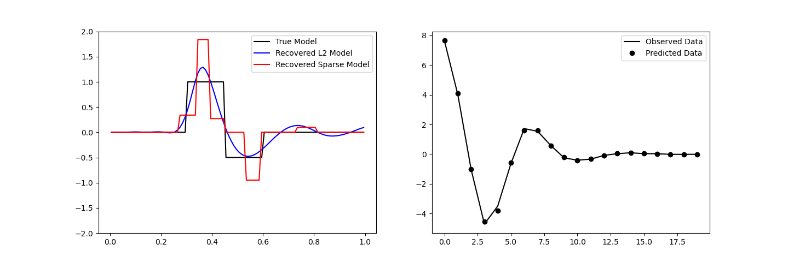
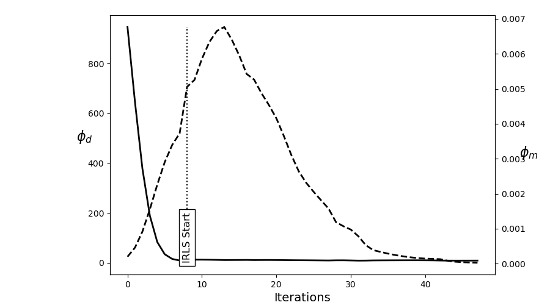

Note
Go to the end to download the full example code
Sparse Inversion with Iteratively Re-Weighted Least-Squares#
Least-squares inversion produces smooth models which may not be an accurate representation of the true model. Here we demonstrate the basics of inverting for sparse and/or blocky models. Here, we used the iteratively reweighted least-squares approach. For this tutorial, we focus on the following:
Defining the forward problem
Defining the inverse problem (data misfit, regularization, optimization)
Defining the paramters for the IRLS algorithm
Specifying directives for the inversion
Recovering a set of model parameters which explains the observations
import numpy as np
import matplotlib.pyplot as plt
from discretize import TensorMesh
from SimPEG import (
simulation,
maps,
data_misfit,
directives,
optimization,
regularization,
inverse_problem,
inversion,
)
# sphinx_gallery_thumbnail_number = 3
Defining the Model and Mapping#
Here we generate a synthetic model and a mappig which goes from the model space to the row space of our linear operator.
nParam = 100 # Number of model paramters
# A 1D mesh is used to define the row-space of the linear operator.
mesh = TensorMesh([nParam])
# Creating the true model
true_model = np.zeros(mesh.nC)
true_model[mesh.cell_centers_x > 0.3] = 1.0
true_model[mesh.cell_centers_x > 0.45] = -0.5
true_model[mesh.cell_centers_x > 0.6] = 0
# Mapping from the model space to the row space of the linear operator
model_map = maps.IdentityMap(mesh)
# Plotting the true model
fig = plt.figure(figsize=(8, 5))
ax = fig.add_subplot(111)
ax.plot(mesh.cell_centers_x, true_model, "b-")
ax.set_ylim([-2, 2])
(-2.0, 2.0)
Defining the Linear Operator#
Here we define the linear operator with dimensions (nData, nParam). In practive, you may have a problem-specific linear operator which you would like to construct or load here.
# Number of data observations (rows)
nData = 20
# Create the linear operator for the tutorial. The columns of the linear operator
# represents a set of decaying and oscillating functions.
jk = np.linspace(1.0, 60.0, nData)
p = -0.25
q = 0.25
def g(k):
return np.exp(p * jk[k] * mesh.cell_centers_x) * np.cos(
np.pi * q * jk[k] * mesh.cell_centers_x
)
G = np.empty((nData, nParam))
for i in range(nData):
G[i, :] = g(i)
# Plot the columns of G
fig = plt.figure(figsize=(8, 5))
ax = fig.add_subplot(111)
for i in range(G.shape[0]):
ax.plot(G[i, :])
ax.set_title("Columns of matrix G")
Text(0.5, 1.0, 'Columns of matrix G')
Defining the Simulation#
The simulation defines the relationship between the model parameters and predicted data.
Predict Synthetic Data#
Here, we use the true model to create synthetic data which we will subsequently invert.
# Standard deviation of Gaussian noise being added
std = 0.02
np.random.seed(1)
# Create a SimPEG data object
data_obj = sim.make_synthetic_data(true_model, noise_floor=std, add_noise=True)
Define the Inverse Problem#
The inverse problem is defined by 3 things:
Data Misfit: a measure of how well our recovered model explains the field data
Regularization: constraints placed on the recovered model and a priori information
Optimization: the numerical approach used to solve the inverse problem
# Define the data misfit. Here the data misfit is the L2 norm of the weighted
# residual between the observed data and the data predicted for a given model.
# Within the data misfit, the residual between predicted and observed data are
# normalized by the data's standard deviation.
dmis = data_misfit.L2DataMisfit(simulation=sim, data=data_obj)
# Define the regularization (model objective function). Here, 'p' defines the
# the norm of the smallness term and 'q' defines the norm of the smoothness
# term.
reg = regularization.Sparse(mesh, mapping=model_map)
reg.reference_model = np.zeros(nParam)
p = 0.0
q = 0.0
reg.norms = [p, q]
# Define how the optimization problem is solved.
opt = optimization.ProjectedGNCG(
maxIter=100, lower=-2.0, upper=2.0, maxIterLS=20, maxIterCG=30, tolCG=1e-4
)
# Here we define the inverse problem that is to be solved
inv_prob = inverse_problem.BaseInvProblem(dmis, reg, opt)
Define Inversion Directives#
Here we define any directiveas that are carried out during the inversion. This includes the cooling schedule for the trade-off parameter (beta), stopping criteria for the inversion and saving inversion results at each iteration.
# Add sensitivity weights but don't update at each beta
sensitivity_weights = directives.UpdateSensitivityWeights(everyIter=False)
# Reach target misfit for L2 solution, then use IRLS until model stops changing.
IRLS = directives.Update_IRLS(max_irls_iterations=40, minGNiter=1, f_min_change=1e-4)
# Defining a starting value for the trade-off parameter (beta) between the data
# misfit and the regularization.
starting_beta = directives.BetaEstimate_ByEig(beta0_ratio=1e0)
# Update the preconditionner
update_Jacobi = directives.UpdatePreconditioner()
# Save output at each iteration
saveDict = directives.SaveOutputEveryIteration(save_txt=False)
# Define the directives as a list
directives_list = [sensitivity_weights, IRLS, starting_beta, update_Jacobi, saveDict]
/home/vsts/work/1/s/tutorials/02-linear_inversion/plot_inv_2_inversion_irls.py:175: UserWarning:
'everyIter' property is deprecated and will be removed in SimPEG 0.20.0.Please use 'every_iteration'.
Setting a Starting Model and Running the Inversion#
To define the inversion object, we need to define the inversion problem and the set of directives. We can then run the inversion.
# Here we combine the inverse problem and the set of directives
inv = inversion.BaseInversion(inv_prob, directives_list)
# Starting model
starting_model = 1e-4 * np.ones(nParam)
# Run inversion
recovered_model = inv.run(starting_model)
SimPEG.InvProblem is setting bfgsH0 to the inverse of the eval2Deriv.
***Done using the default solver Pardiso and no solver_opts.***
model has any nan: 0
=============================== Projected GNCG ===============================
# beta phi_d phi_m f |proj(x-g)-x| LS Comment
-----------------------------------------------------------------------------
x0 has any nan: 0
0 1.67e+06 1.88e+03 5.03e-10 1.88e+03 1.99e+01 0
1 8.34e+05 9.46e+02 1.99e-04 1.11e+03 1.89e+01 0
2 4.17e+05 6.46e+02 4.59e-04 8.37e+02 1.82e+01 0 Skip BFGS
3 2.08e+05 3.78e+02 9.16e-04 5.69e+02 1.66e+01 0 Skip BFGS
4 1.04e+05 1.89e+02 1.55e-03 3.51e+02 1.44e+01 0 Skip BFGS
5 5.21e+04 8.29e+01 2.26e-03 2.01e+02 1.24e+01 0 Skip BFGS
6 2.61e+04 3.40e+01 2.90e-03 1.10e+02 9.79e+00 0 Skip BFGS
7 1.30e+04 1.52e+01 3.39e-03 5.94e+01 8.30e+00 0 Skip BFGS
Reached starting chifact with l2-norm regularization: Start IRLS steps...
irls_threshold 1.2879967656420686
8 6.51e+03 8.84e+00 5.11e-03 4.22e+01 3.12e+00 0 Skip BFGS
9 1.05e+04 8.10e+00 5.88e-03 7.01e+01 1.43e+01 0
10 8.21e+03 1.24e+01 5.92e-03 6.09e+01 1.68e+00 0
11 6.39e+03 1.24e+01 6.32e-03 5.28e+01 1.87e+00 0 Skip BFGS
12 5.07e+03 1.20e+01 6.58e-03 4.53e+01 2.47e+00 0 Skip BFGS
13 4.12e+03 1.14e+01 6.65e-03 3.88e+01 2.89e+00 0 Skip BFGS
14 4.12e+03 1.07e+01 6.53e-03 3.76e+01 2.90e+00 0
15 4.12e+03 1.08e+01 6.13e-03 3.61e+01 3.34e+00 0
16 4.12e+03 1.10e+01 5.64e-03 3.42e+01 4.22e+00 0
17 3.39e+03 1.12e+01 5.20e-03 2.88e+01 4.27e+00 0
18 3.39e+03 1.06e+01 4.99e-03 2.75e+01 3.66e+00 0 Skip BFGS
19 3.39e+03 1.09e+01 4.60e-03 2.64e+01 8.80e+00 0
20 3.39e+03 1.09e+01 4.15e-03 2.50e+01 7.48e+00 0
21 3.39e+03 1.07e+01 3.69e-03 2.32e+01 4.61e+00 0
22 3.39e+03 1.04e+01 3.19e-03 2.12e+01 5.03e+00 0
23 3.39e+03 1.01e+01 2.70e-03 1.93e+01 5.22e+00 0
24 3.39e+03 9.87e+00 2.29e-03 1.76e+01 5.10e+00 0
25 3.39e+03 9.69e+00 2.02e-03 1.65e+01 4.79e+00 0 Skip BFGS
26 3.39e+03 9.47e+00 1.77e-03 1.55e+01 5.37e+00 0
27 3.39e+03 9.18e+00 1.54e-03 1.44e+01 5.79e+00 0
28 5.28e+03 8.94e+00 1.35e-03 1.61e+01 1.22e+01 0 Skip BFGS
29 5.28e+03 9.52e+00 1.11e-03 1.54e+01 8.69e+00 0
30 5.28e+03 9.59e+00 9.52e-04 1.46e+01 9.20e+00 0
31 5.28e+03 9.04e+00 7.34e-04 1.29e+01 8.06e+00 0
32 8.43e+03 8.40e+00 5.86e-04 1.33e+01 1.28e+01 0
33 1.33e+04 8.57e+00 4.57e-04 1.47e+01 1.52e+01 0
34 1.33e+04 9.15e+00 3.55e-04 1.39e+01 1.10e+01 0
35 1.33e+04 9.35e+00 2.99e-04 1.34e+01 9.79e+00 0 Skip BFGS
36 1.33e+04 9.49e+00 2.55e-04 1.29e+01 9.28e+00 0 Skip BFGS
37 1.33e+04 9.59e+00 2.18e-04 1.25e+01 9.05e+00 0 Skip BFGS
38 1.33e+04 9.68e+00 1.88e-04 1.22e+01 9.00e+00 0 Skip BFGS
39 1.33e+04 9.74e+00 1.62e-04 1.19e+01 9.22e+00 0
40 1.33e+04 9.74e+00 1.41e-04 1.16e+01 9.88e+00 0
41 1.33e+04 9.66e+00 1.22e-04 1.13e+01 1.05e+01 0
42 1.33e+04 9.39e+00 1.05e-04 1.08e+01 1.11e+01 0
43 2.09e+04 8.81e+00 8.63e-05 1.06e+01 1.47e+01 0
44 3.33e+04 8.45e+00 6.11e-05 1.05e+01 1.37e+01 0
45 5.32e+04 8.38e+00 4.53e-05 1.08e+01 1.40e+01 0 Skip BFGS
46 8.48e+04 8.41e+00 3.57e-05 1.14e+01 1.35e+01 0
47 1.35e+05 8.45e+00 2.88e-05 1.23e+01 1.24e+01 0
Reach maximum number of IRLS cycles: 40
------------------------- STOP! -------------------------
1 : |fc-fOld| = 0.0000e+00 <= tolF*(1+|f0|) = 1.8853e+02
1 : |xc-x_last| = 2.4894e-02 <= tolX*(1+|x0|) = 1.0010e-01
0 : |proj(x-g)-x| = 1.2399e+01 <= tolG = 1.0000e-01
0 : |proj(x-g)-x| = 1.2399e+01 <= 1e3*eps = 1.0000e-02
0 : maxIter = 100 <= iter = 48
------------------------- DONE! -------------------------
Plotting Results#
fig, ax = plt.subplots(1, 2, figsize=(12 * 1.2, 4 * 1.2))
# True versus recovered model
ax[0].plot(mesh.cell_centers_x, true_model, "k-")
ax[0].plot(mesh.cell_centers_x, inv_prob.l2model, "b-")
ax[0].plot(mesh.cell_centers_x, recovered_model, "r-")
ax[0].legend(("True Model", "Recovered L2 Model", "Recovered Sparse Model"))
ax[0].set_ylim([-2, 2])
# Observed versus predicted data
ax[1].plot(data_obj.dobs, "k-")
ax[1].plot(inv_prob.dpred, "ko")
ax[1].legend(("Observed Data", "Predicted Data"))
# Plot convergence
fig = plt.figure(figsize=(9, 5))
ax = fig.add_axes([0.2, 0.1, 0.7, 0.85])
ax.plot(saveDict.phi_d, "k", lw=2)
twin = ax.twinx()
twin.plot(saveDict.phi_m, "k--", lw=2)
ax.plot(np.r_[IRLS.iterStart, IRLS.iterStart], np.r_[0, np.max(saveDict.phi_d)], "k:")
ax.text(
IRLS.iterStart,
0.0,
"IRLS Start",
va="bottom",
ha="center",
rotation="vertical",
size=12,
bbox={"facecolor": "white"},
)
ax.set_ylabel(r"$\phi_d$", size=16, rotation=0)
ax.set_xlabel("Iterations", size=14)
twin.set_ylabel(r"$\phi_m$", size=16, rotation=0)
- 
- 
Text(865.1527777777777, 0.5, '$\\phi_m$')
Total running time of the script: (0 minutes 32.629 seconds)
Estimated memory usage: 8 MB